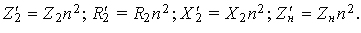

В реальных трансформаторах число витков w1 ≠ w2, поэтому непосредственно перейти от магнитной связи между катушками к кондуктивной невозможно, т. к. потенциалы соответствующих точек соединения обмоток неодинаковы (ЭДС E1L ≠ E2M).
Для анализа процессов и для получения расчётных соотношений реальный трансформатор, у которого w1 ≠ w2 и коэффициент трансформации n ≠ 1, условно заменяют расчётным, т. н. приведенным трансформатором, у которого путем перерасчёта параметров вторичной обмотки получают n = 1. Такой трансформатор заменяют схемой замещения с кондуктивной связью, исключив магнитную связь, т. к. потенциалы соответствующих точек соединения будут одинаковы (ЭДС E1L = E'2M). Приведённые к числу витков первичной обмотки электрические величины вторичной обмотки будем снабжать символом ' (примечание).
Запишем соотношения между приведенной E'2 и реальной ЭДС E2M взаимоиндукции (в дальнейшем E2) и напряжениями U'2 и U2:
| E'2 = E2n = E1 и U'2 = U2n. | (7.6) |
| I'2 = I2/n. | (7.7) |
|  |